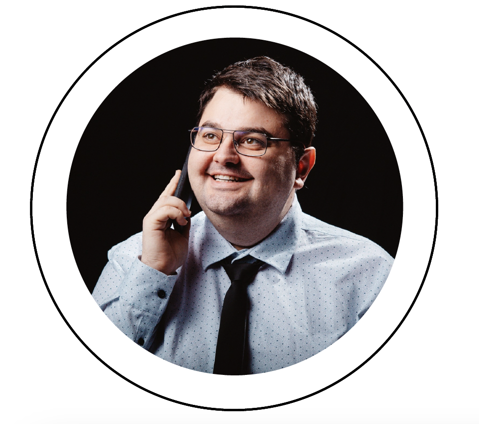

Salim Kuytov

“Be stubborn about your goals,
and flexible about your methods.”
Summary
- True global collaborator who builds sustainable relations.
- Objective focused, self-propelled and
have a positive driving attitude.
- Seek to understand before being understood
and continuously drive improvements.
Education
- Bachelor degree in mechanical engineering | "Angel Kanchev" University of Rousse, Bulgaria | 2023
- CATIA V5 Certification | Haycad infotech | 2018
- III-rd Qualification degree Technician of transport equipment | Professional High School “PhD. Dr. Asen Zlatarov” Svishtov, Bulgaria | 2015
- Microsoft IT Academy | 2011
Work Experience
- Maintenance and repair manager | Septona Bulgaria AD | Currently
- CAD Designer | Linamar Light Metals Ruse | Aug. - Nov. 2022
- IT Support Specialist | MIK Green | Apr. - July 2022
- Supporting and training photovoltaic installers
- PV plant design
- Marketing
- Call Center
- Design Engineer | Husqvarna Construction | May 2019 - Apr. 2022
- I was part of the engineering team which launched the first
Husqvarna BV 30i screed from Bulgaria
- Conceptualize and design machine systems in CATIA V5 taking into account
maintainability, testability, affordability, safety and security.
- Build prototypes and test them to verify the concepts.
- Review and discussed concepts and solutions together with the team.
- Actively contributed to product safety risk analysis and certification activities
- Team Manager | | "Angel Kanchev" University of Rousse, Bulgaria | 2017 - Present Days
- Shell Eco-marathon 2017 | London | 360 km/kWh
- Shell Eco-marathon 2018 | London | 472 km/kWh
- Shell Eco-marathon 2019 | London | New Vehicle, Design Award 2nd place
- Shell Eco-marathon 2020-2021 | Virtual Events due to COVID-19
- Shell Eco-marathon 2022 | Nogaro, France | 505 km/kWh
- Shell Eco-marathon 2022 | Nogaro, France | 571 km/kWh
Skills
- CATIA V5
- MS Office
- 3DS MAX
- Adobe Creative Cloud
- Photoshop
- Lightroom
- Illustrator
- Premiere Pro
- After Effects
- Audition
- Drone Pilot
CERTIFICATES | MY HOBBY | CONTACT ME